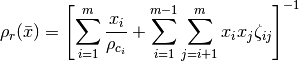
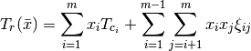
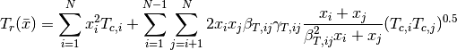
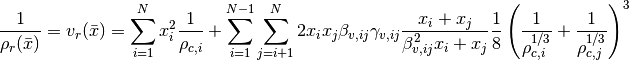
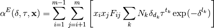
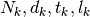
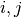
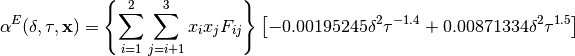
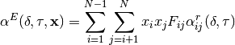
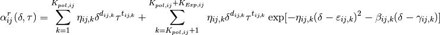

From Lemmon, JPCRD, 2000 for the properties of Dry Air, and also from Lemmon, JPCRD, 2004 for the properties of R404A, R410A, etc.


From the GERG 2008 formulation (Kunz and Wagner, JCED, 2012)


From Lemmon, JPCRD, 2004 for the properties of R404A, R410A, etc.

where the terms  correspond to the pair given by the indices 
From Lemmon, JPCRD, 2000 for the properties of Dry Air

From Kunz and Wagner, JCED, 2012 for GERG 2008

where

and is for the particular binary pair given by the indices . This term is similar in form to other Helmholtz energy terms for pure fluids though the derivatives are slightly special.